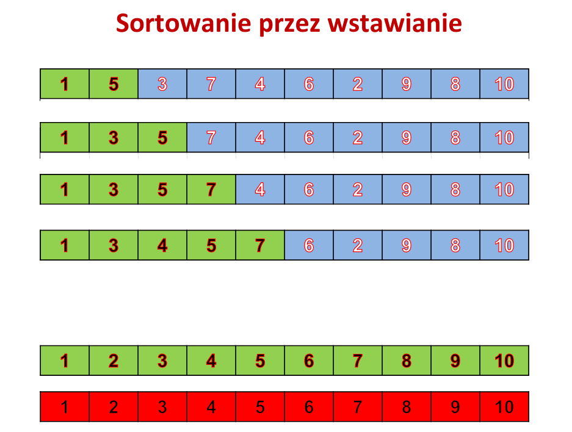

Krótki opis:
Jeden z najprostszych algorytmów sortowania, którego zasada działania odzwierciedla sposób w jaki ludzie ustawiają karty – kolejne elementy wejściowe są ustawiane na odpowiednie miejsca docelowe. Jest efektywny dla niewielkiej liczby elementów, jego złożoność wynosi O(n2). Pomimo tego, że jest znacznie mniej wydajny od algorytmów takich jak quicksort czy heapsort, posiada pewne zalety:
-
liczba wykonanych porównań jest zależna od liczby inwersji w permutacji, dlatego algorytm jest wydajny dla danych wstępnie posortowanych,
-
jest wydajny dla zbiorów o niewielkiej liczebności,
-
jest stabilny.
Istnieje modyfikacja algorytmu, pozwalająca zmniejszyć liczbę porównań. Zamiast za każdym razem iterować po już posortowanym fragmencie (etap wstawiania elementu), można posłużyć się wyszukiwaniem binarnym. Pozwala to zmniejszyć liczbę porównań do O(nlogn), nie zmienia się jednak złożoność algorytmu, ponieważ liczba przesunięć elementów to nadal O(n2).
Szczególny opis:
Założenie:
Uczyń element drugi elementem „bieżącym”.
Dopóki nie umieścisz na „właściwym” miejscu elementu ostatniego postępuj następująco:
-
Znajdź „właściwe” miejsce dla elementu „bieżącego”
porównując go z elementami poprzedzającymi i przesuń wszystkie większe
od niego o jedną pozycję w kierunku końca tablicy;
-
Uczyń elementem „bieżącym” kolejny element tablicy.
od niego o jedną pozycję w kierunku końca tablicy;
Algorytm:
Sortowane elementy/obiekty są dostępne w tablicy jednowymiarowej liczącej N pozycji.
Po zakończenius ortowania elementy te nadal znajdują się w tej samej tablicy, lecz w odpowiedniej kolejności.
